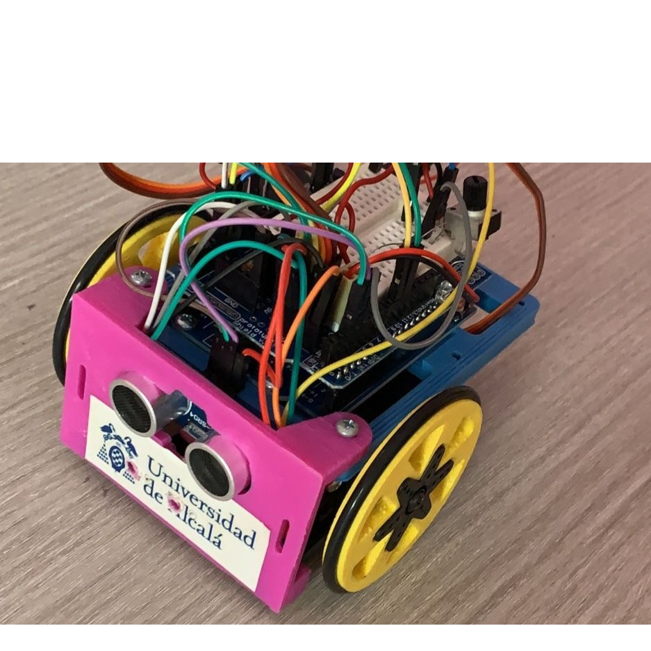

Lucía Tejedor de la Cruz
INGENIERA EN TELECOMUNICACIONES
Formación y experiencia
Entre mis proyectos más destacados se encuentran:
IA y procesamiento de señal
- Pipeline de preprocesado espectral y clasificación (Python/MATLAB) en vocoder, MNIST y señales biomédicas (ECG/EEG/EMG); modelos SVM y ML clásico con ajuste y búsqueda de hiperparámetros.
- Librerías usadas: Python (NumPy, pandas, SciPy), scikit-learn (pipelines, GridSearchCV), matplotlib, OpenCV, librosa; notebooks en Jupyter.
- Familiaridad con frameworks de redes neuronales a nivel introductorio (CNNs básicas para imagen).
Software y telemática
- Desarrollo web con Django + HTMX (comentarios, puntuaciones, APIs/XML) en Linux. GameRank
- Juego online en Python “Tactical Battle” cliente-servidor, multihilo, matchmaking y ranking persistente; gestión de timeouts/cierres.
- JavaScript, scripts en Shell (Bash), frontend (HTML, CSS, DOM, Bootstrap).
- Bases de Datos y Testing: diseño y consultas SQL; verificación formal con TLA+/PlusCal. Proyecto ISI - 100Microbits
Electrónica, HW y VHDL
- Prácticas de circuitos resistivos, diodos/Zener y BJT: caracterización, rectificación y puntos de trabajo, simulación LTSpice y medidas.
- RISC-V (ensamblador) y VHDL (módulos combinacionales/secuenciales y testbenches intro).
Redes y comunicaciones
- Protocolos: TCP, DNS, OSPF, BGP; diseño e implantación L2; segmentación y encaminamiento dinámico.
- Wi-Fi 2,4 GHz (Bulnes–Sotres): simulación/diseño en Radio Mobile; validación con Rx y barrido 360°.
- Certificación radioeléctrica (URJC, GSM900): medidas con antena NARDA y ajuste a normativa.
- Diseño de red inalámbrica P2P para conectividad rural; mensajería cifrada en MATLAB con constelaciones LEO+GEO.
- Fluidez con Git y documentación técnica.
Experiencias complementarias
- Concurso “Tubot” (UAH, 2017): robot tipo SUMO con Arduino UNO, sensores IR/ultrasonidos, control PWM y lógica de detección.
- Docencia STEM: clases particulares (dibujo técnico, mates, física, química, TIC) para ESO/Bachillerato.
- Proyectos personales: recreación de “Space Invaders” en Scratch con bloques personalizados y eventos broadcast.
- Formación autodidacta: cursos/certificaciones en MATLAB, IA y programación.

Certificaciones
- DataMiner Configurator Level 1 & 2 (Skyline Communications).
- DataMiner Fundamentals (Skyline Communications).
- Secure Coding in Dataminer (Skyline Communications)